Educação em Jequié
A educação em Jequié tem se destacado pelo compromisso com a melhoria das
escolas, a inclusão dos estudantes e a valorização dos profissionais. Com ações contínuas,
o município busca fortalecer o aprendizado e contribuir para o desenvolvimento da comunidade.
Conheça nossas instituições de ensino técnico e de graduação, que oferecem formação
de qualidade e abrem caminho para novas oportunidades profissionais e acadêmicas.
Instituições de Ensino Técnico
Instituto Federal de Eduacação, Ciência e Tecnologia da Bahia (IFBA)

- Pública
- Ano de início de funcionamento: 2010
- Diretor Geral: Luciano Pestana
- Rua John Kennedy s/n Loteamento - Cidade Nova, Jequié - BA, 45201-570
- Cursos ofertados: Eletromecânica e Informátic
- Google Maps
- Website
CEEP Régis Pacheco

- Pública
- Ano de início de funcionamento: 1952
- Dirigente Máximo: Fannie Sampaio Pereira Novais
- s/n, R. Quinze de Novembro - Campo do América, Jequié - BA, 45203-570
- Cursos ofertados: Administração, Secretariado, Edificações, Informática, Segurança do Trabalho, Enfermagem, Saúde Bucal, Agente Comunitário de Saúde e Dança
- Google Maps
- Instagram
Complexo Integrado de Educação Básica Profissional e Tecnológica de Jequié (CIEB)
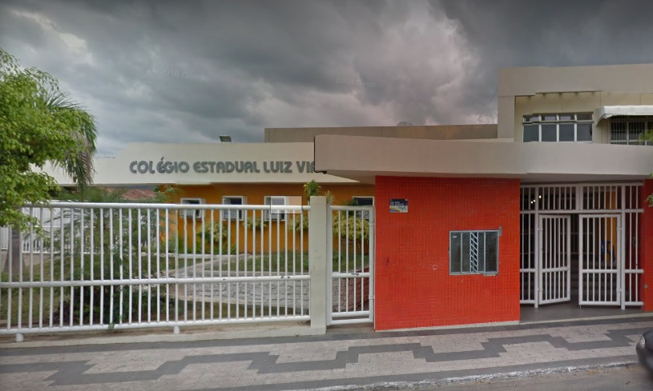
- Pública
- Ano de início de funcionamento: 1999
- Dirigente Máximo: José Gonçalves Lopes Júnior
- Lions Club, s/n - Jequiezinho, Jequié - BA, 45206-020
- Cursos ofertados: Manutenção e Suporte em Informática
- Google Maps
- Instagram
SENAI
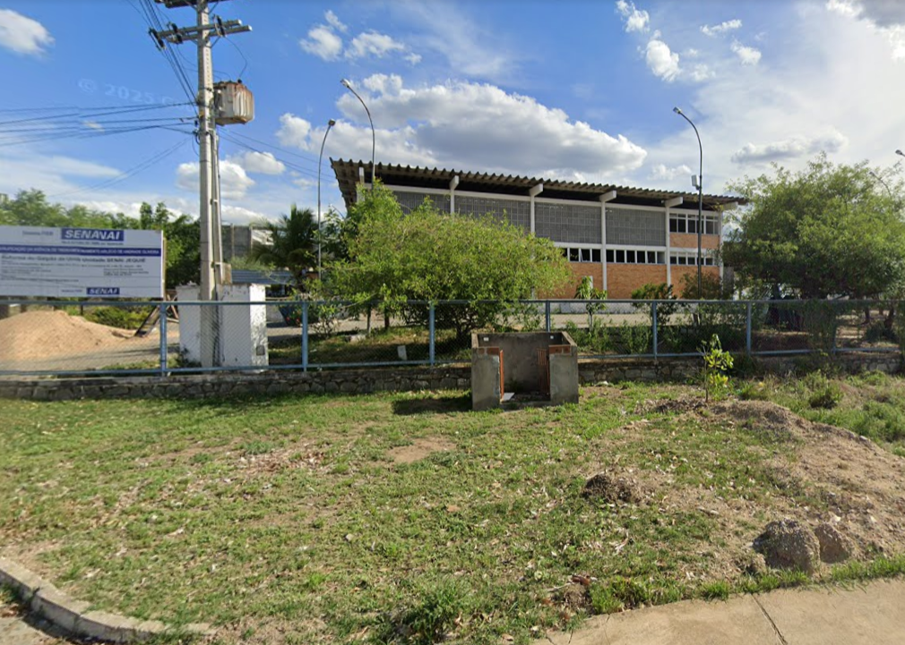
- Pública
- Ano de início de funcionamento: 2004
- Dirigente Máximo: Evandro Minuce Mazo
- Av. Otávio Mangabeira, lote 16 - 17 - Mandacaru, Jequié - BA
- Cursos ofertados: Administração, Biotecnologia, Modelagem Digital de Construção Civil, Qualidade, Sistemas de Energia Renovável, Administração, Automação Industrial, Biotecnologia, Desenvolvimento de Sistemas, Desenvolvimento de Sistemas, Edificações, Eletromecânica, Eletrotécnica, Logística, Logística, Manutenção Automotiva, Manutenção de Máquinas Industriais, Mecânica, Mecatrônica, Multimídia, Petroquímica, Programação de Jogos Digitais, Qualidade, Química, Redes de Computadores, Refrigeração E Climatização e Segurança do Trabalho
- Google Maps
- Instagram
SENAC
- Pública
- Ano de início de funcionamento: 2023/li>
- Dirigente Máximo: Marina Vianna Alves de Almeida
- Praça da bandeira - Centro, Jequié - BA, 45200-310
- Cursos ofertados: Chat Com Ia Para Prática De Conversação Em Língua Estrangeira, Conversação Inglês Intermediário, Inglês Básico, Drinques A Base De Cachaça, Pancs - Plantas Alimentícias Não Convencionais, Organização De Estoques Para Bares E Restaurantes, Gestão De Pequenos Negócios, Faturamento Hospitalar, Recepcionista, Terapia Capilar, Unhas Em Postiça Realista, Programas Socioprofissionais e Tranças Nagô E Box Braids
- Google Maps
- Website
Colégio Estadual de Jequié (Polivalente)
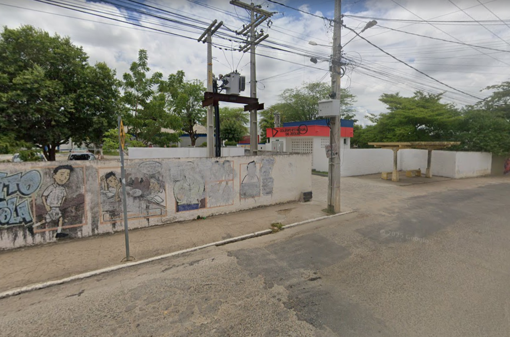
- Pública
- Ano de início de funcionamento: 1984/li>
- Dirigente Máximo: Emily de Souza Santos
- Av. Franz Gedeon, s/n - Jequiezinho, Jequié - BA, 45200-005
- Cursos ofertados: Saúde Bucal, Análises Clínicas, Nutrição, entre outros.
- Google Maps
- Instagram
CPET
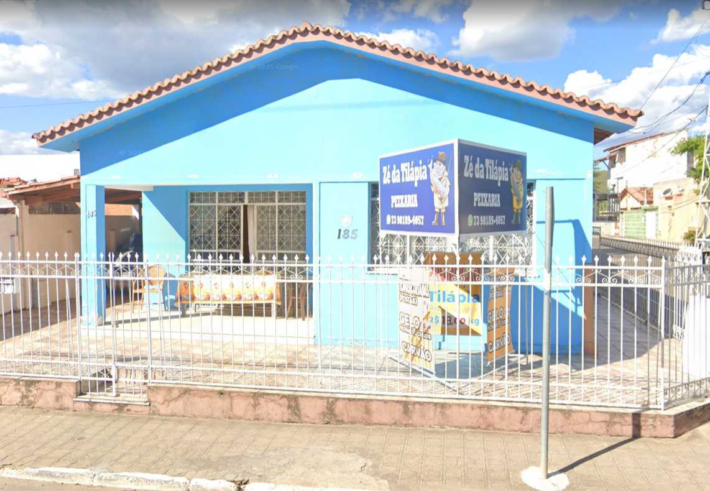
- Particular
- Ano de início de funcionamento: 2010
- Dirigente Máximo: Ricardo Luiz Marcatto
- Rua Coronel - R. Erotildes Soares, 185 - Campo do América, Jequié - BA, 45206-069
- Cursos ofertados: Segurança do trabalho, administração, eletrônica, mecânica, transações imobiliárias, edificações, eletrotécnica, logística, nutrição e dietética, química, automação industrial, meio ambiente, agrimensura, secretaria escolar, guia de turismo, nacional, regional, internacional, qualidade, design de interiores, contabilidade, mineração, estética, vendas, secretariado, informática para internet, agronegócio, marketing, recursos humanos, finanças, agente comunitário de saúde, vigilância em saúde, rede de computadores, serviços jurídicos, alimentação escolar, comércio exterior e serviços públicos
- Google Maps
- Website
RECRUTEC Cursos
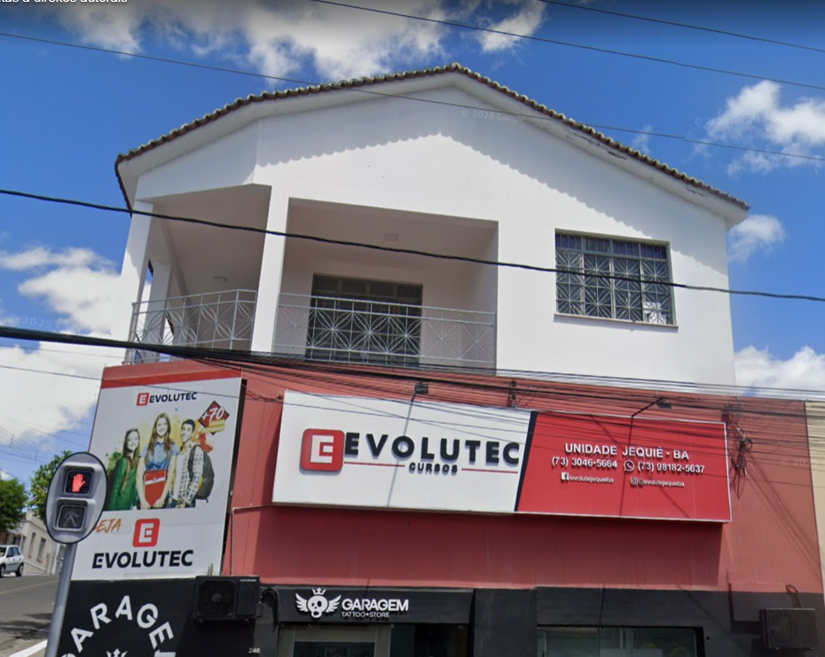
- Particular
- Ano de início de funcionamento: 2019
- Dirigente Máximo: Jesse Brito da Silva Filho
- Av. Rio Branco, 246 - 1º andar - Centro, Jequié - BA, 45200-011
- Cursos ofertados: Informática, atendente de farmácia, auxiliar bancário, programação, auxiliar administrativo, programador de games, design gráfico, logística e web design
- Google Maps
- Website
Instituto Mix
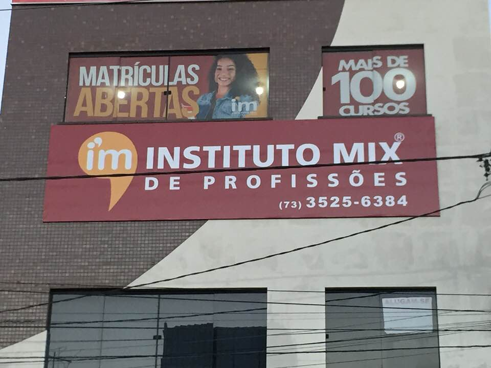
- Particular
- Ano de início de funcionamento: 2020
- Dirigente Máximo: Alexandre Almeida Feitosa
- R. Félix Gáspar, 50 - Centro, Jequié - BA, 45200-350
- Cursos ofertados: Administração, beleza, construção, gastronomia, idiomas, turismo e hotelaria, Saúde, indústria e mecânica, moda música e arte, tecnologia e interativos
- Google Maps
- Website
Procursos Jequié
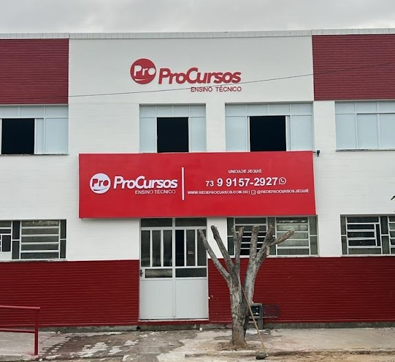
- Particular
- Ano de início de funcionamento: 2025
- Dirigente Máximo: Alexandre Conceição Chave
- R. Apolinário Peleteiro, 215 - Campo America, Jequié - BA, 45203-088
- Cursos ofertados: Administração, análises clínicas, enfermagem, estética, massoterapia, podologia, prótese dentária, radiologia, saúde bucal, segurança no trabalho e veterinário
- Google Maps
- Website
Colégio Politécnico Humberto Ribeiro Reis
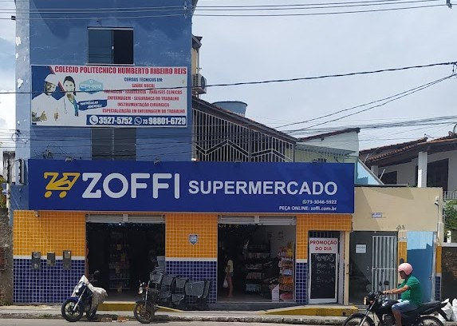
- Particular
- Ano de início de funcionamento: 1999
- Dirigente Máximo: Maria da Conceição Reis Souza
- Av. Artur Morais, 338 - Jequiezinho, Jequié - BA, 45206-011
- Cursos ofertados: Enfermagem, Análises Clínicas, Radiologia, Instrumentação Cirúrgica, Segurança do Trabalho, Saúde Bucal e Farmácia.
- Google Maps
- Instagram
Microlins
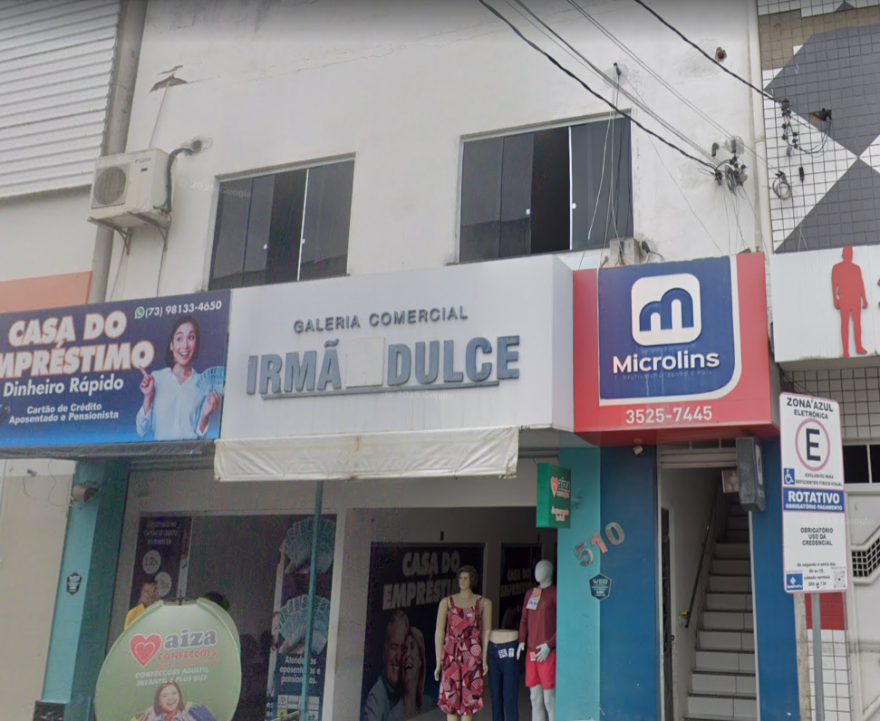
- Particular
- Ano de início de funcionamento: 2022
- Dirigente Máximo: Patrícia Souza Gomes
- R. Francisco Alves Meira, 510 - 1° Andar - Centro, Jequié - BA, 45200-090
- Cursos ofertados: Informática, saúde coletiva, administração, manutenção de computadores e redes, marketing digital, recepcionista de saúde, criação de jogos, auxiliar odontológico, auxiliar de farmácia, auxiliar médico, operador de caixas, administração de empresas e logística
- Google Maps
- Website
CETEP
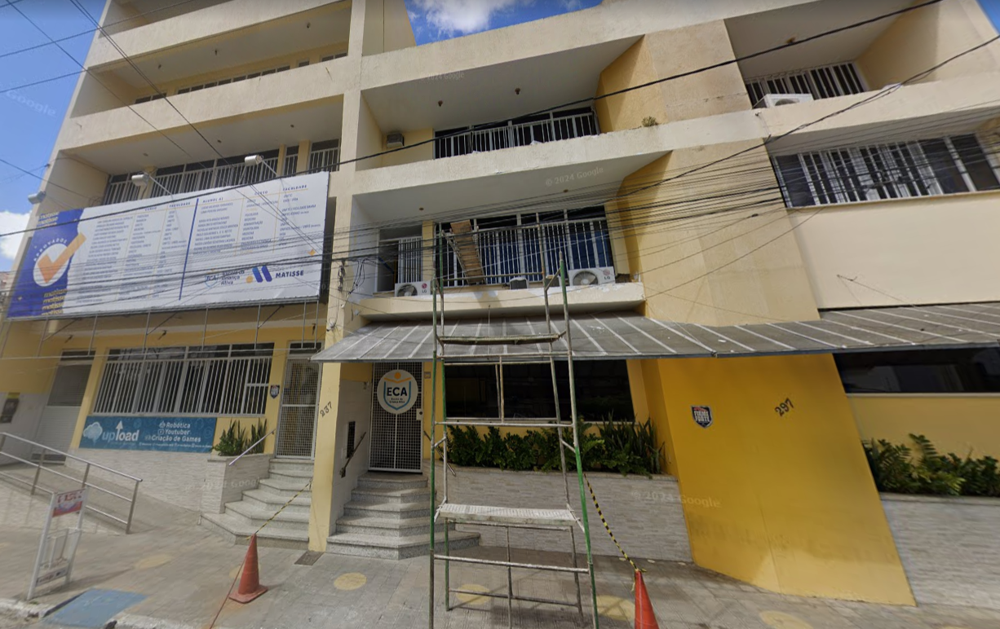
- Particular
- Ano de início de funcionamento: 2010
- R. Dom Pedro II, 297 - Centro, Jequié - BA, 45203-020
- Cursos ofertados: Enfermagem, Segurança do Trabalho e Treinamentos.
- Google Maps
- Instagram
IBAP
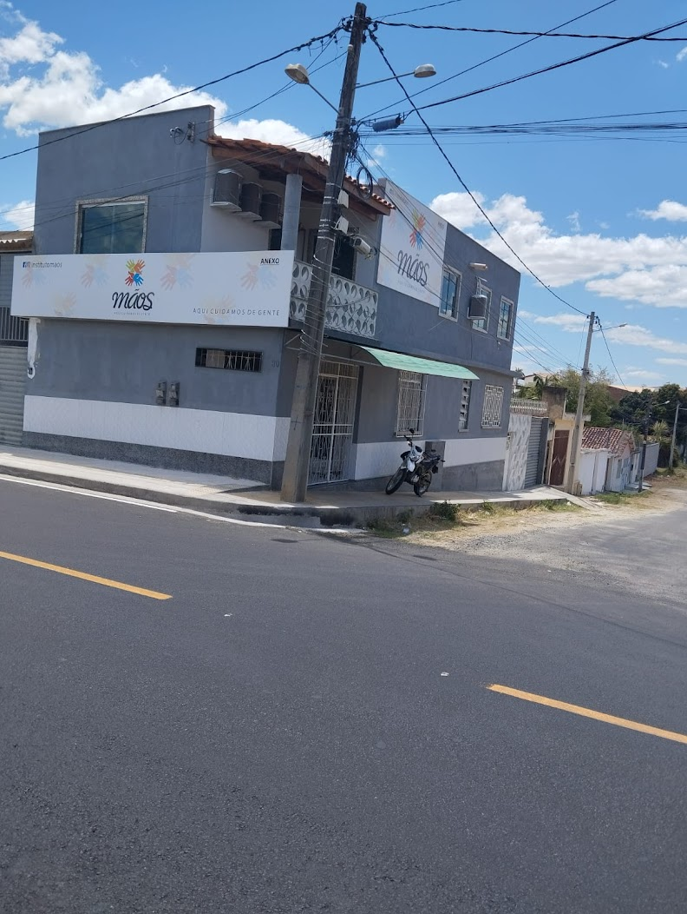
- Particular
- Ano de início de funcionamento: 2016
- Dirigente Máximo: Marcele Sampaio Ribeiro
- R. C, 80 - Jequiezinho, Jequié - BA, 45208-373
- Cursos ofertados: Massagem modeladora e drenagem linfática
- Google Maps
- Instagram